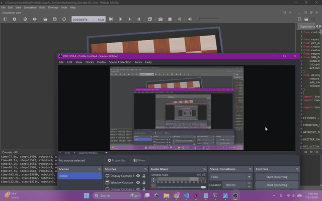
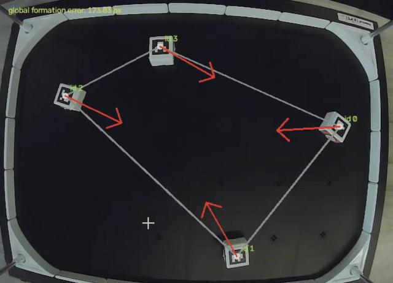

GNN for Flocking Control in Multi-Robot Systems
Trained a graph neural network through imitation learning to reproduce a classical flocking controller for six robots. Compared formation tracking, navigation time, and obstacle avoidance.

Research projects and technical demonstrations. For papers, see Publications.
Trained a graph neural network through imitation learning to reproduce a classical flocking controller for six robots. Compared formation tracking, navigation time, and obstacle avoidance.
Developing an end-to-end framework for learning-based multi-robot formation control, including Webots simulation, robot modeling, localization, and physical evaluation infrastructure.

Robot demonstrations of rendezvous, fixed-slot formation, obstacle handling, and flocking with switching behaviors using camera-based pose tracking.
